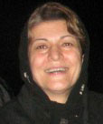
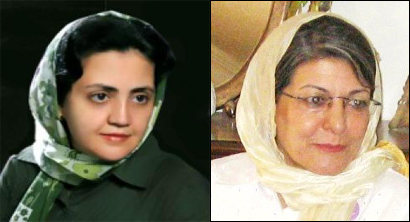
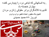
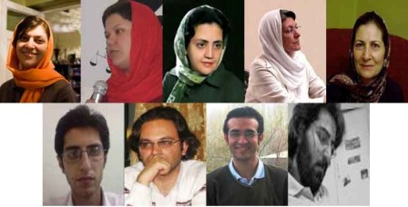
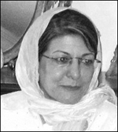
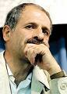

تغییر برای برابری
تغییر برای برابریتغییر برای برابری - خدیجه مقدم پس از14 روز بازداشت در زندان اوین آزاد شد.
چهارشنیه 19 فروردین، یک روز پس از آزادی محبوبه کرمی، خدیجه مقدم نیز با تودیع قرار وثیقه 20 میلیون تومانی برای پرونده جدیدی که برایش بازشده و همچنین کفالت 50 میلیون تومانی مانند دیگر متهمان جنبش زنان که قصد دیدار نوروزی با مادر زهرا بنی یعفوب را داشتند آزاد شد.
خبراحتمال آزادی او را همسر خدیجه مقدم پس از تودیع کفالت و وثیقه به دادسرای امنیت اعلام کرد و سرانجام ساعت 9شب خدیجه مقدم در میان استقبال مادران آزاد شد..
به گفته وکیل خدیجه مقدم و همچنین خود او دادیار پرونده اتهامات (...)
پذيرش > واژه كليدها > صفحه بندی > گزارش ویژه
گزارش ویژه
مقالهها
-

خدیجه مقدم آزاد شد
8 آوريل 2009, بوسيلهى pari -

تعویق مجدد در آزادی خدیجه مقدم و محبوبه کرمی
6 آوريل 2009تغییر برای برابری: به رغم وعده های روز گذشته ی مسئولان دادیاری امنیت دادسرای انقلاب، جلسه ی رسیدگی به پرونده ی خدیجه مقدم و محبوبه کرمی یک بار دیگر به تعویق افتاد.
صبح امروز هفدهم فروردین، خانواده و وکلای این دو فعال کمپین یک میلیون امضا بار دیگر برای پیگیری وضعیت آنان به دادسرای انقلاب مراجعه کردند اما به دلیل اعزام نشدن خدیجه مقدم و محبوبه کرمی از زندان اوین، دادگاه آنان تشکیل نشد. این در حالی است که هیچ گونه توضیحی برای تعویق برگزاری دادگاه این دوفعال کمپین که از ششم فروردین تا کنون در زندان اوین به سر می برند، به خانواده و وکلای آنان داده نشد.
هوشنگ (...) -
امیر یعقوبعلی آزاد شد
26 مه 2009تغییر برای برابری - امیر یعقوبعلی از فعالان کمپین یک میلیون امضا که 25 روز پیش در پارک لاله بازداشت شده بود، سرانجام دیروز با قرار کفالت آزاد شد. امیر یعقوبعلی به همراه چند تن دیگر از فعالان کمپین یک ساعت پیش از اجرای برنامه ای که بنا بود به فراخوان جامعه کارگری برای بزرگداشت اول ماه می، روز جهانی کارگر، برگزار شود توسط ماموران امنیتی بازداشت شده بود. وی اتهامات خود را تبانی برای اقدام علیه امنیت ملی و اخلال در نظم عمومی بیان کرد. وضعیت عمومی روحی و جسمی وی رضایت بخش است.
بازداشت شدگان روزجهانی کارگز می روزهای اول را در سلول های دربسته بند 240 زندان اوین (...) -
برگزاری جلسه رسیدگی به پرونده ی 10 فعال جنبش زنان/ رسیدگی به پرونده خدیجه مقدم و محبوبه کرمی به دوشنبه موکول شد
5 آوريل 2009تغییر برای برابری - صبح امروز، يكشنبه 16 فروردين، جلسه ی رسیدگی به پرونده ی 10 نفر از اعضاي كمپين و مادران صلح که روز ششم فروردین بازداشت شدند در دادیاری امنیت دادسرای انقلاب برگزار شد. تیم وکلای جنبش زنان، خانم ها شیرین عبادی، نسرین ستوده، نسیم غنوی و مینا جعفری و همچنین آقای فرخ فروزان و آقای پوربابایی از جمله وکلای برخی از فعالان جنبش زنان بودند که موکلان شان را همراهی کردند. آنان در جلسه ی دادگاه امروز که به منظور اخذ آخرین دفاع و تفهیم اتهام بازداشت شدگان ششم فروردین تشکیل شد در دفتر آقای حیدری فرد معاون دادیار امنیت حاضر شدند.
نسرین ستوده یکی از (...) -

هدیه نوروزی به کنشگران کمپین
19 مارس 2009, بوسيلهى pariتغییر برای برابری - حمید حمیدی از حامیان اولیه کمپین یک میلیون امضا کلیپی را آماده و به عنوان هدیه نوروزی به کنشگران کمپین تقدیم کرده است. تغییربرای برابری ضمن سپاسگزاری از وی و کوششی که برای دلگرمی همه کنشگران کمپین به کار برده است، سال نو را به او و همه زنان و مردان برابری خواه در جنبش زنان و دیگر جنبش های اجتماعی تبریک می گوید.
این کلیپ را می توانید در لینک های زیر دانلود کرده و ببینید :
nourooz88 film
http://www.radiomihan.com/Nourooz88.wmv
power point 88 (...) -

پی گیری خانواده ها برای آزادی بازداشت شدگان شش فروردین بی نتیجه ماند
28 مارس 2009تغییر برای برابری: به رغم وعده های داده شده برای آزادی 12 تن از اعضای کمپین یک میلیون امضا و مادران صلح، بازداشت آنان همچنان ادامه دارد و مردان کمپینی از صبح امروز به زندان قزل حصار منتقل شده اند. خدیجه مقدم، لیلا نظری، دلارام علی، فرخنده احتسابیان، محبوبه کرمی، شهلا فروزانفر، ثریا یوسفی، آرش نصیری اقبالی، امیر رشیدی، محمد شوراب وعلی عبدی، عصر روز پنج شنبه در حالی که تصمیم داشتند به دیدار نوروزی با خانواده های برخی از زندانیان بروند در خیابان سهروردی تهران دستگیر و به زندان منتقل شده و بازداشت آنان تا کنون ادامه یافته است.
صبح امروز در سومین روز (...) -

محبوبه کرمی آزاد می شود/ خدیجه مقدم به زندان بازگشت
7 آوريل 2009, بوسيلهى pariتغییر برای برابری- امروز صبح خدیجه مقدم و محبوبه کرمی از زندان اوین ب دادسرای امنیت احضار شدند و وکلای آنان هوشنگ پوربابایی و نسیم غنوی حضور داشتند. قرار کفالت برای محبوبه کرمی پذیرفته شد اما خدیجه مقدم مجددا به زندان بازگشت. طبق قرارصادره محبوبه کرمی امروز آزاد می شود.
در مورد پرونده خدیجه مقدم نسیم غنوی وکیل او گفت: آخرین دفاع از خانم مقدم اخذ شد و قرار بود با قرار کفالت آزاد شوند که تصمیم شان عوض شد و گفتند که برای ایشان پرونده جدیدی در شعبه اول بازپرسی تشکیل شده است.با توجه به وجود این پرونده آقای حیدری فر دادیار امنیت از صدور قرار کفالت امتناع کرد. (...) -
اعتراض به مجلس یا سهم الارث زنان؟/ مرمر جمالی
3 فوريه 2009, بوسيلهى pari6 بهمن وقتي از تريبون مجلس تعداد موافقان با طرح اصلاح موادى از قانون مدنى در خصوص سهم الارث زنان از همسران متوفى، 169 نفر اعلام شد، رييس مجلس حتما جمله معروفش را گفته است:"بدجوري راي آورد"...
-

محمد شریف: دادگاه نمي تواند بر اساس شخصيت متهم، مجازات هاي گوناگون تعيين كند
8 فوريه 2009, بوسيلهى pariتغییر برای برابری- گفتگوی محبوبه حسین زاده با دکتر محمد شریف درباره حقوق متهمان بازداشت، حبس و صدور احكام متفاوت و گاهي بسيار متناقض براي اعضاي كمپين يك ميليون امضا در حالي ادامه دارد كه سخنگوي قوه قضائيه، پيش از اين جمع آوري امضا براي كمپين را جرم ندانسته بود و در قانون اساسي كه قانون مادر كشور است و همه قوانين بر اساس آن تنظيم مي شود، سخني از مجرمانه بودن عمل جمع آوري امضا نشده است. از سوي ديگر در حكم تبرئه راحله عسكري زاده و نسيم خسروي؛ جمع آوري امضا براي كمپين همانند اقدامات هر شهروند ايراني نظير درخواست براي آسفالت خيابان ذكر شده است. با اين حال (...)
-
طاها ولی زاده و سه تن دیگر از بازداشت شدگان روز کارگر آزاد شدند
20 مه 2009تغییر برای برابری- عصر روز گذشته بیست و نهم اردی بهشت، چهار نفر دیگر از بازداشت شدگان مراسم روز جهانی کارگر آزاد شدند.
طاها ولی زاده از فعالین کمپین یک میلیون امضا، به همراه عیسی عابدینی و ابوذر خادمی با تودیع 50 میلیون تومان کفالت و علی پیری بدون تودیع کفالت از زندان اوین آزاد شدند. با آزادی این افراد ، نزدیک به 70 تن دیگر از فعالین کارگری که در مراسم پارک لاله بازداشت شده اند و همچنین پوریا پورشتاره، کاوه مظفری، جلوه جواهری و امیر یعقوبعلی از فعالان کمپین یک میلیون امضا نیز همچنان در بازداشت به سر می برند.
خانواده های فعالین کارگری که طی بیست روز (...)